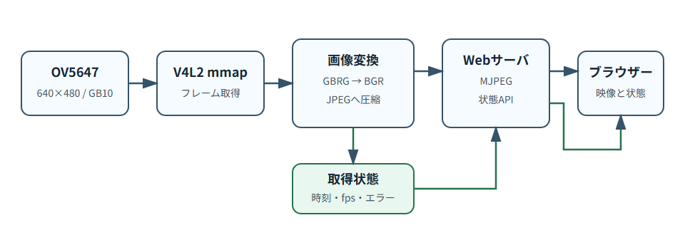
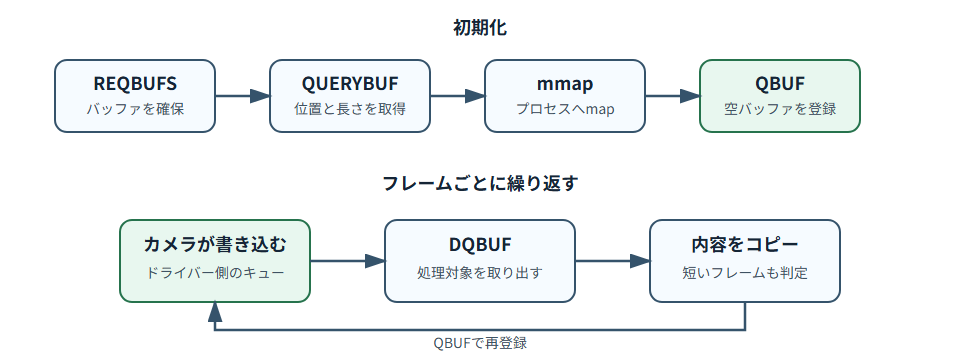
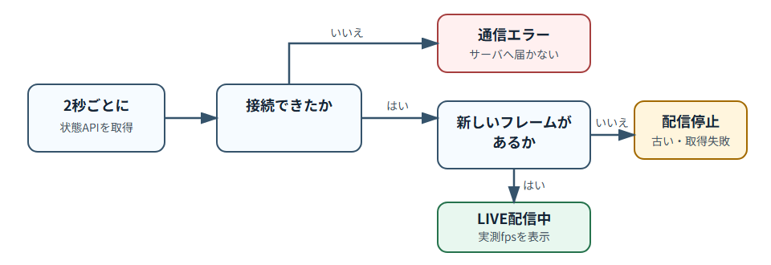

Raspberry Piのカメラ映像をブラウザーへ届ける――方式選定と止まった映像を誤認させない設計¶
Raspberry Piへ接続したOV5647の映像を、同じLAN上のブラウザーで見られるようにした。 画面は単純だが、「カメラの画像をWebブラウザで表示する」だけでは見守りカメラとして不十分だった。
この記事では、下記について解説しています。 - V4L2から継続してフレームを受け取る方法 - ブラウザーへの配信方式をMJPEGに決めた理由 - Webサーバの応答と映像の更新を分けて監視する設計方針
NOTE: GBRGのRAWデータとコンテナ運用は、それぞれ情報量が多いため別の記事で扱う。
今回の条件¶
方式を選ぶ前に、必要なことを絞った。
- Raspberry PiとOV5647を使う
- 解像度は640×480、目標は約30 fps
- 同じLAN内で、少人数がPCまたはスマートフォンから見る
- ブラウザー以外の専用クライアントを作らない
- 音声、録画、過去映像の再生は不要
- カメラ停止と通信エラーを利用者が見分けられるようにする
大人数への配信やインターネット越しの視聴は、今回の範囲に含めていない。この条件が変われば、適切な配信方式も変わる。
カメラからJPEGを作るまで¶
映像と状態は、次の経路でブラウザーへ送る。

図1: OV5647からブラウザーまでの映像処理
OV5647から取得するGB10は、各画素を10 bit値として持つGBRG配列だ。この実装では16 bit little-endianの値として読み、8 bitへ変換してからOpenCVでデモザイクする。
ただし、画素の並び、メモリ上のbyte配置、OpenCVの変換名を一度に説明すると、配信方式の話が埋もれてしまう。記事を分け、次の3点を図解する予定だ。
- 左上を原点とした4×4のGBRGカラーフィルター配列
- 10 bit値を16 bit little-endianで保持する1画素2 byteの配置
GBRG10 → GBRG8 → COLOR_BayerGR2BGR → BGRの変換経路
V4L2のバッファを順番に処理する¶
フレーム取得にはV4L2のmmap方式を使う。最初にドライバーへ複数のバッファを要求し、それぞれをプロセスのアドレス空間へmapする。空のバッファをキューへ登録してから、ストリームを開始する。

図2: V4L2 mmapバッファの循環
フレームが入ると、DQBUFで処理対象のバッファをキューから取り出す。内容をPython側へコピーしたら、同じバッファをQBUFで再びキューへ登録する。これは、カメラドライバーが繰り返し使うバッファをキューで循環させる考え方が近いかな。
終了時にはSTREAMOFF、mmap解除、ファイルディスクリプターのcloseまでをまとめて行う。詳しいAPIの流れはLinux KernelのV4L2 mmap資料で確認できる。
配信方式を比べる¶
今回検討した方式は、静止画の定期取得、MJPEG、HLS、WebRTCの4つだ。
| 方式 | 良い点 | 今回困る点 | 判断 |
|---|---|---|---|
| JPEGを一定間隔で取得 | 実装が最も単純。1枚ずつ確認しやすい | 滑らかな動きにするほどHTTPリクエストが増える。取得間隔の揺れも見えやすい | 状態確認用には使えるが、ライブ観察には使わない |
| MJPEG | 各フレームが独立したJPEG。ブラウザーのimg要素で表示できる。既存のJPEG変換をそのまま使える |
フレーム間圧縮がないため通信量が多い。大人数への配信には向かない | 今回採用 |
| HLS | 通常のWebサーバやCDNで配りやすく、回線に合わせた配信や多数視聴へ広げやすい | エンコード、segment、playlistが必要。通常構成では遅延が増え、低遅延化すると構成が複雑になる | LAN内の少人数・低遅延用途には過剰 |
| WebRTC | 低遅延の音声・映像通信に向き、外部ネットワーク越しの接続も設計できる | signalingに加え、外部接続ではSTUN/TURNなどの構成が必要。今回不要な双方向通信まで含む | 旅行先から見る段階で再検討 |
HLSは信頼性や回線への適応、大規模配信に強い。一方、AppleのLow-Latency HLS資料でも、低遅延化にはpartial segment、playlist差分、blocking reloadなどの追加要素が必要になる。今回の1台のRaspberry Piと少人数のLAN内視聴には過剰設計なので不採用。
WebRTCは低遅延配信の有力候補だが、peer同士の接続方法を決めるsignalingは仕様に含まれず、STUN/TURNを含む接続設計が必要になる。外から安全に見る機能を作るときには価値があるが、今回は宅内のLANからの閲覧なので不採用。
MJPEGは帯域効率では劣る。それでも今回は、カメラ処理の出力がすでにJPEGであること、各フレームを独立して扱えること、ブラウザー側をimg要素だけで構成できることが決め手。
配信にはIANAに登録されているmultipart/x-mixed-replaceを使い、JPEGごとにboundaryとContent-Lengthを付けて送る。
Webサーバが応答しても、映像が更新されているとは限らない¶
WebサーバがHTTPリクエストへ応答できても、カメラから新しいフレームを取得できているとは限らない。そこで、プロセスの応答確認と映像の配信処理を分割した。
| エンドポイント | 確認するもの |
|---|---|
/healthz |
取得処理を含むサービスが稼働しているか |
/readyz |
鮮度上限以内の新しいフレームがあるか |
/api/status |
状態、フレーム番号、実測fps、直近のエラー |
また、実測fpsは、直近最大30フレームのフレーム取得時刻を保存しておき、下記の計算式で求める。
fps = (記録数 - 1) / (最後の取得時刻 - 最初の取得時刻)

図3: Webサーバへ接続できない状態と、接続できても映像が更新されない状態も分割した。
合成画像は、実機試験をなくすためのものではない¶
カメラ固有の処理と、それ以外の変更を分けるため、CameraSourceをprotocolとして定義した。実機用のV4L2RawSourceと同じインターフェースでSyntheticSourceを用意し、移動する帯、フレーム番号、時刻を描いたJPEGを生成する。
CAMERA_BACKEND=synthetic python -m underwater_monitor
これは「実カメラを使うテストが不要」という意味ではない。変更内容によって確認場所を分けるための仕組みだ。
| 変更内容 | 開発PCの合成画像で確認 | OV5647実機で確認 |
|---|---|---|
| Web画面のレイアウトや状態表示 | できる | 最終確認のみ |
| API、フレーム更新、異常時の処理 | できる | 実機条件も確認 |
| GBRGの色、露光、ゲイン、回転 | できない | 必須 |
| V4L2 mmapとデバイス制御 | できない | 必須 |
| 実測fpsと表示遅延 | 合成入力の基礎確認のみ | 必須 |
UIやAPIの変更は、合成画像を使った自動テストや開発PCでの動作確認を先に行える。カメラフォーマット、デバイス制御、実際の性能に関わる変更は、OV5647を接続したRaspberry Piで確かめる。
次の記事では、まずGBRGの4×4配列と1画素2 byteのメモリ配置をSVGにし、実際のRAWデータを小さく切り出して図と対応させる。
関連記事¶
- 開発のきっかけと次の計画: 旅行で買ったまりもが寂しそうだったので、メダカ観察カメラを作った
参考サイト¶
- Linux Kernel: 10-bit Bayer formats —
GB10を含む4種類、1画素16 bit、little-endianの配置 - OpenCV: Color Space Conversions — デモザイク関数と
COLOR_BayerGBRG2BGR = COLOR_BayerGR2BGRの対応 - Linux Kernel: Media Bus Formats — センサーとsub-device側で扱う10 bit Bayer形式
- Linux KernelのV4L2 mmap資料
- AppleのHLS資料
- WebRTCのpeer connection解説